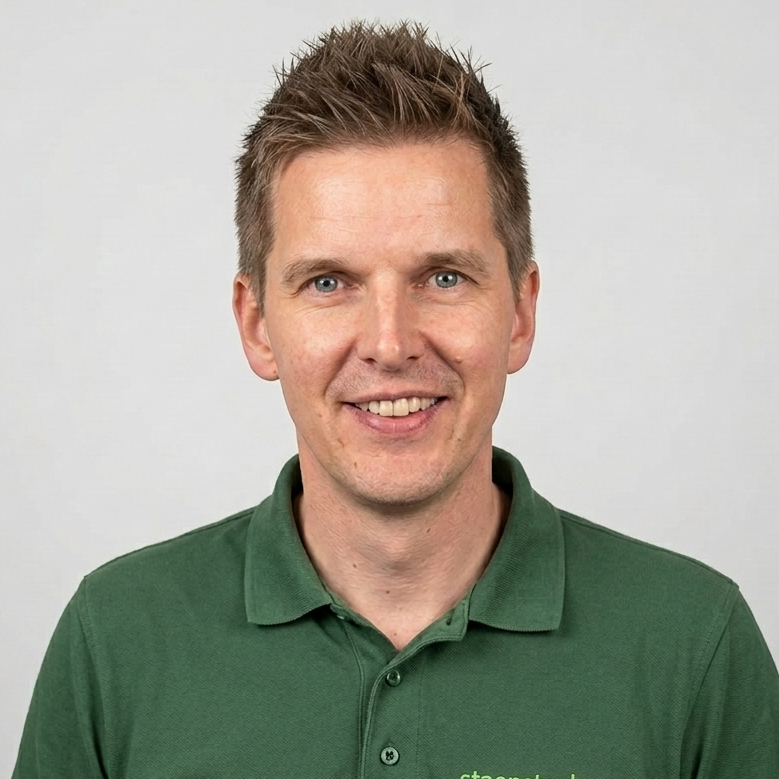
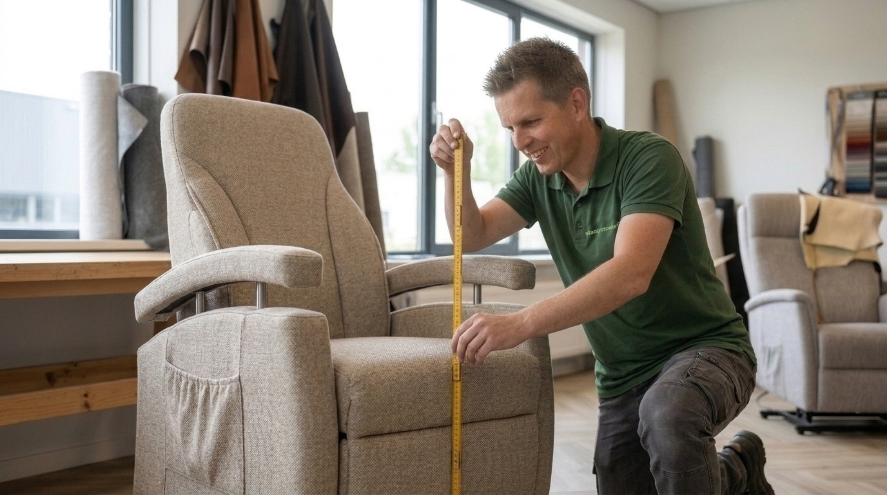
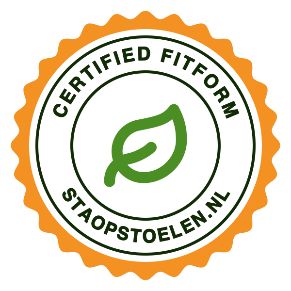

Wij begrijpen dat u als ergotherapeut een zorgvuldige, onderbouwde oplossing zoekt. Daarom houden wij de lijnen kort: u heeft rechtstreeks contact met de specialist die de meting uitvoert en de stoel aflevert.

“Een stoel is pas goed als hij past bij het lichaam én bij het dagelijks functioneren van de cliënt. Daar nemen we samen de tijd voor.”
Officieel keurmerk en erkend Fitform-dealer in de Drechtsteden.
Nieuw of gereviseerd, met 15-punts keuring en grondige reiniging.
Volledige garantie, met service en onderhoud bij de cliënt thuis.
Eigen bezorging en installatie; gratis in de regio Drechtsteden.
Een goed afgestelde sta-op stoel draagt bij aan veilige transfers, een stabiele zithouding en het behoud van zelfstandigheid. Wij denken graag met u mee – van hulpvraag tot nazorg.


Iedere cliënt heeft een eigen ziektebeeld, lichaamsbouw en dagritme. Een confectiestoel schiet dan al snel tekort. Fitform sta-op stoelen zijn modulair opgebouwd, waardoor wij de stoel kunnen afstemmen op de specifieke beperkingen en het behandeldoel dat u heeft geformuleerd.
Een elektrische sta-op functie begeleidt de cliënt gecontroleerd naar stand. Dit ontlast knieën en heupen, en vermindert de fysieke belasting van de mantelzorger.
Verschillende rugmodellen – waaronder een kyfose- en kuiprug – bieden passende steun bij een afwijkende vorm van de wervelkolom.
Kantelverstelling (tilt) verdeelt het gewicht over zitvlak en rug. Relevant bij langdurig zitten en een verhoogd risico op decubitus.
Een onafhankelijk verstelbare beensteun maakt hoogligging van de benen mogelijk, desgewenst tot boven hartniveau.
De juiste zithoogte en armleuningen op maat geven betrouwbare steunpunten bij het gaan zitten en opstaan.
Zitbreedte, zitdiepte en zithoogte zijn in meerdere maten leverbaar, ook voor zeer kleine of juist grote cliënten.
Liever eerst overleggen? Bespreek een casus vrijblijvend met Geertjan. Samen bepalen we welke uitvoering en opties passend zijn – vóórdat uw cliënt een keuze maakt.
Wij werken volgens een vaste, transparante werkwijze. Zo weet u precies wat uw cliënt kan verwachten en blijft u als behandelaar betrokken bij iedere stap.
U deelt de hulpvraag, beperkingen en het behandeldoel. Wij stemmen de aanpak af met u, uw cliënt en eventueel de mantelzorger.
Geertjan meet de cliënt op vijf vaste punten op – in onze showroom of bij de cliënt thuis.
De cliënt zit proef in passende modellen. Desgewenst ontvangt u een gespecificeerd meetrapport met advies.
Wij bezorgen en installeren de stoel, stellen hem ter plekke definitief af en geven heldere uitleg. Ook daarna blijven wij uw aanspreekpunt.
Meetrapport voor uw dossierNa de meting ontvangt u op verzoek een overzicht van de gemeten maten, de geadviseerde uitvoering en de gekozen opties.